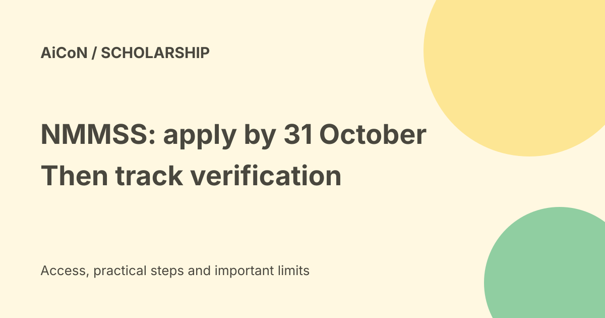

NMMSS 2026-27: apply by 31 October and track school verification
The Education Ministry has extended the NMMSS application date to 31 October 2026. This is the National Scholarship Portal application deadline, not a new deadline to sit the state selection exam. Fresh awards are for selected Class IX students; existing award holders renew for Classes X to XII, subject to the rules.

The current dates
| Student application | Saturday, 31 October 2026 |
|---|---|
| Institute verification (L1) | Sunday, 15 November 2026 |
| District verification (L2) | Monday, 30 November 2026 |
These dates come from the Education Ministry's 1 October 2026 PIB notice. Apply early and ask the school to check the application well before its verification date. Do not wait for a weekend deadline to resolve a bank or school record problem.
Who can apply?
NMMSS supports students in state government, government-aided and local body schools. Parental income from all sources must not exceed ₹3.50 lakh a year. To appear in the selection test, students need at least 55% marks or equivalent in Class VII, with a five-percentage-point relaxation for SC/ST students.
The scheme provides one lakh fresh scholarships each year for eligible Class IX students who qualify in their State/UT selection examination. The award continues through Classes X to XII by renewal, subject to academic requirements. Being in a low-income household alone does not replace the selection requirement. For Kerala, confirm your selection or renewal status with your school before starting a fresh application.
What does the award pay?
The published award is ₹12,000 per year, paid to eligible students' bank accounts through Direct Benefit Transfer. This is an annual award, not a promise that ₹1,000 will arrive each month. Approval, verification and the payment process still apply.
How to apply carefully on NSP
- Open scholarships.gov.in directly. Read the current NMMSS notice and identify whether you need fresh or renewal application.
- Complete or recover your One-Time Registration. NSP describes OTR as a 14-digit number based on Aadhaar or Aadhaar Enrolment ID, used throughout the student's academic career.
- Follow the current student application flow for 2026-27. Check the student name, school, selection or renewal details and bank information against the records.
- Review everything before final submission. Save the acknowledgement or application ID and check status later.
- Contact the school about L1 verification, then follow up on district L2 status. Correct any issue through the permitted portal or school process before the relevant deadline.
We did not sign in, enter Aadhaar details or submit an application. Exact screens can change. Keep OTPs and full identity or bank numbers private.
Documents, bank details and help
The official NMMSS FAQ says fresh applicants give the school an income certificate and caste certificate for verification; it says documents are not uploaded for this scheme. Confirm current portal instructions and the school's requirements rather than assuming this older FAQ describes every 2026 screen.
The FAQ stresses correct IFSC and account numbers, completed KYC and an active account. Ask the bank about Aadhaar linkage and the account used for DBT if you are unsure. NSP also lists a ₹30, tax-inclusive charge for the complete assisted OTR and application activity at Common Service Centres. That is an assisted-service charge, not the scholarship amount or a reason to pay an unofficial agent.
Frequently asked questions
Can an unselected Class IX student apply just because the date was extended?
The fresh award requires State/UT selection. This extension does not replace that examination.
Do existing students use a fresh application?
Existing award holders use renewal where applicable. Check the current scheme and school guidance.
Is OTR enough?
No. OTR identifies the student; the scholarship application and both verification levels are separate.
What changed since the earlier post?
The current PIB notice gives 31 October for applications, 15 November for institute verification and 30 November for district verification. This guide separates those dates from the state selection exam and explains OTR, school checks and bank risks. It does not claim we tested a student's application.
Sources: Education Ministry date notice · National Scholarship Portal · Official NMMSS FAQ. Checked 7 October 2026.